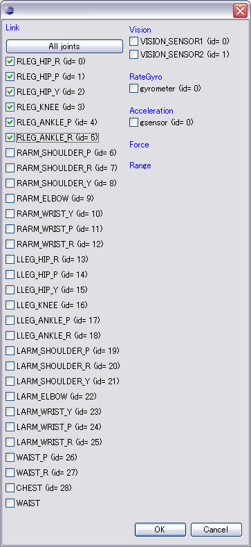

OverviewOperation of a controller requires the rtc.conf file which describes a setup of RT component, and the script (batch) file which described a setup of connection between a controller bridge and RT component. A controller bridge is the process of passing input and output between a robot and each OpenRTM component. It also creates RT component for a robot's input and output. Here, the creation method of two files is explained. How to create using GUIPlease choose Sample from the list of robots by Controller View, and push a "Edit" button.
Please set up the name and the interval of operation of Controller and push a "new File" button.
The dialog for a file setup opens. The name of the controller is already displayed. Because, it must be in agreement with the name set up by Controller View.
You set up a robot's input-output port to control.
If you choose the cell of id, the dialog for id edit will open. Since a robot's link names and sensor names are displayed, please put in a check.

Please set up Module Name and Controller RTC Name and push a "check" button.
When you save a setup of connection at another file, please put a check into "Use the configuration file", put in a file name, and push a "check" button.
Please push a "Save as" button, choose a file and save the contents. Please save as SamplePD.sh (.bat) to a mySamplePD directory in the example of this document. Please push a "Close" button and close Dialog. How to create using a text editor
Since two configuration files are text format, you can edit using the editor. rtc.conf
"rtc.conf" file should be placed in the current directory when you start this particular ControllerBridge. Specify the location(ip address) of the nameserver, according to your environment. corba.nameservers: localhost:2809 Specify the settings regarding with log files.
logger.enable:YES Specify the log file's name format and saving location(path). You can also specify the direct path as shown below. logger.file_name: D:\\Temp\\rtc%p.log Set the log level. logger.log_level: TRACE Specify the module file name and the component name. manager.modules.preload: SamplePD manager.components.precreate: SamplePD Normally you don't have to change the following contents. naming.formats: %n.rtc manager.modules.load_path: . exec_cxt.periodic.rate: 1000000 manager.modules.abs_path_allowed: yes exec_cxt.periodic.type: SynchExtTriggerEC Refer OpenRTM Configuaration manual, for detailed explanation about RT-components' configuration options.
Note:
Controller-bridge Settings
The purpose of separating the implementation of each RT-component is to improve the maintainability and the portability upon development process.
Here we describe, how to start controller-bridge and its connection settings with the component. SamplePD.sh#!/bin/sh openhrp-controller-bridge \ --server-name SamplePDController \ --out-port angle:JOINT_VALUE \ --in-port torque:JOINT_TORQUE \ --connection angle:angle \ --connection torque:torque
server-name：Name of OpenHRP controller.
out-port：Specifies output port name and output property, seperated by colon.
in-port：Specifies input port name and input property, seperated by colon.
connection：Used to specify the connection between ports. Please refer to "How to use Controller-Bridge" for details of a starting option |